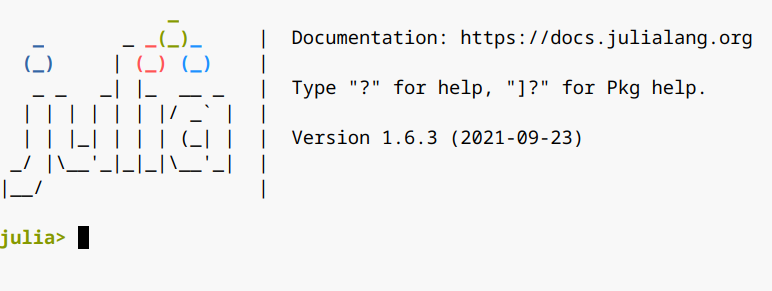

安装与配置
Julia是一个跨平台应用，安装起来非常容易，不管是使用Windows、Linux还是macOS系统，都可到 Julia官方网站下载安装。在Windows下，安装过程中选择Add Julia to Path复选框，安装成功后就可以在命令行的任何位置启动Julia。
Julia有自己的图形窗口REPL（读取-求解-打印-循环），可对程序进行读取和执行。你可以通过桌面快捷图标、程序菜单或命令行来启动这个程序，当程序启动后，你将看到如下界面：

最后一行 julia> 为命令提示符，它的出现表明Julia程序正常启动并进入到REPL，等待你输入代码。成功安装Julia软件后，我们需要对开发环境做一个简单的配置，以使你在Julia中的输入和输出看起来与书中的结果相一致（可能会有细微的差别）。在 julia> 提示符后输入如下命令：
julia> using Pkgjulia> Pkg.add("OhMyREPL")Resolving package versions... No Changes to `~/Example/docs/Project.toml` No Changes to `~/Example/docs/Manifest.toml`julia> using OhMyREPL
大家可以先不用关心每条语句的具体含义，后面会逐步学到。配置完成后，如果你输入一行代码并按回车，REPL将显示结果：
julia> 1 + 12
另外一点需要说明的是，每次重新启动Julia程序后都要首先输入using OhMyREPL语句，这显然很麻烦。一个解决方案是可以将这条语句放入Julia启动文件startup.jl中。这样，Julia在启动时就会自动调用这条语句。startup.jl文件位于~/.julia/config/中，如果该目录下没有startup.jl文件或.julia目录中没有config目录，则可以自己创建一个。
在下载程序包时，如遇下载速度很慢的情况，可以将Julia程序包服务器镜像切换为国内镜像源，方法是在startup.jl文件中添加一条语句：ENV["JULIA_PKG_SERVER"]="https://mirrors.bfsu.edu.cn/julia/static"。